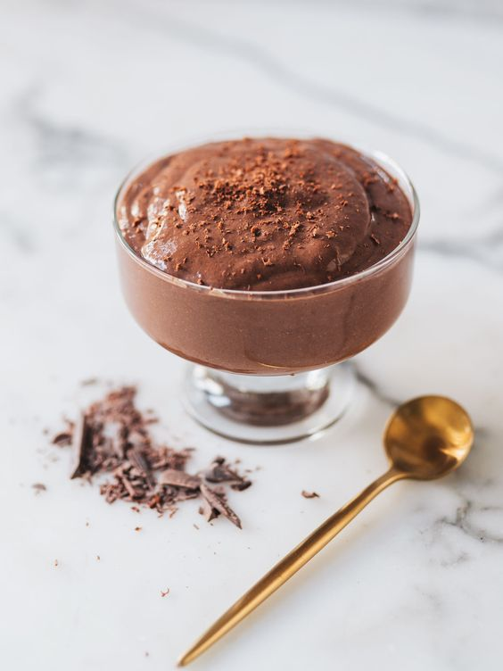

5-Minute Chocolate Chia Mousse

Description.
This chocolate chia mousse tastes exactly like packet chocolate pudding,
except it has no refined sugar and is a nutrition power house!
Blending the chia mixture means
there is no need to wait overnight, plus it gets rid of the gloopy chia texture and transforms
it into a smooth and creamy mousse!
Ingredients
- 4 tbsp chia seeds
- 3 tbsp cocoa powder
- 1 tsp vanilla extract
- 2 tbsp maple syrup
- 3 tbsp monkfruit erythritol sweetener
- 360ml soy milk
- pinch of salt
Steps.
- Place all ingredients in a high-speed blender.
Blend on high until mixture is completely smooth and creamy,
about 1-2 minutes, pausing to scrap down the sides if necessary.
- Transfer to serving glasses and enjoy!
pro-tips
- Straight out of the blender, this chia mousse will have a soft pudding texture.
If you prefer a firmer mousse, you can leave it in the fridge
to set for 30 minutes to overnight.
- I used a mixture of maple syrup and monkfruit erythritol sweetener because I like the flavor of this combination for this recipe.
However, feel free to substitute with any other sweeteners of choice
- Feel free to substitute soy milk with any other milk of choice.